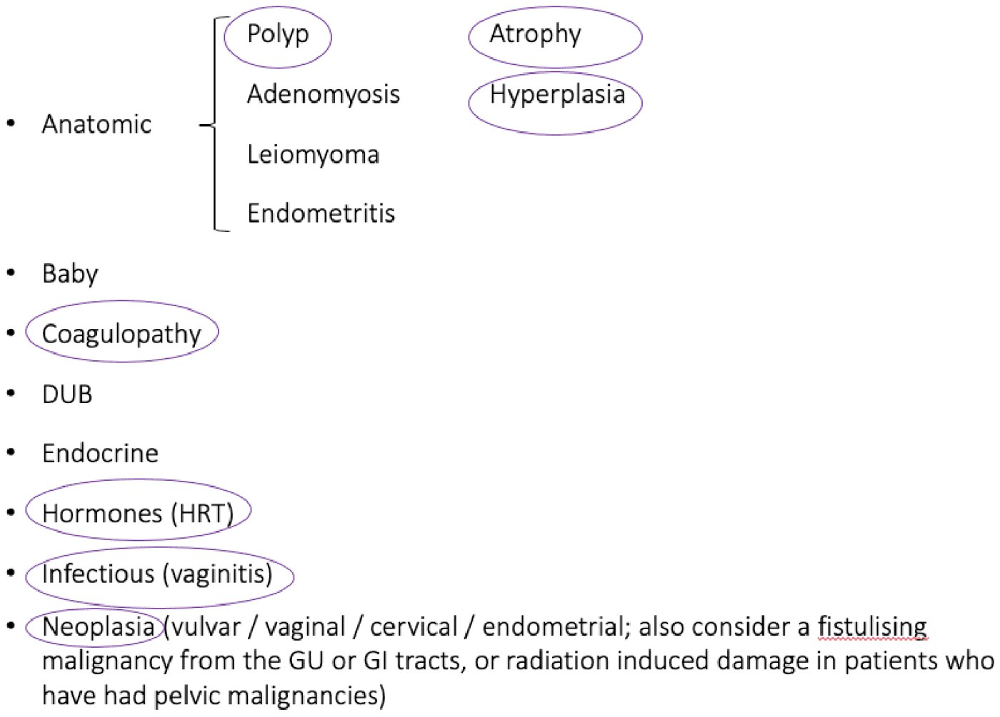
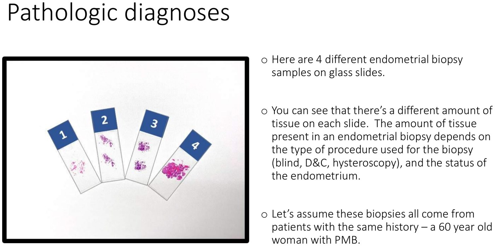
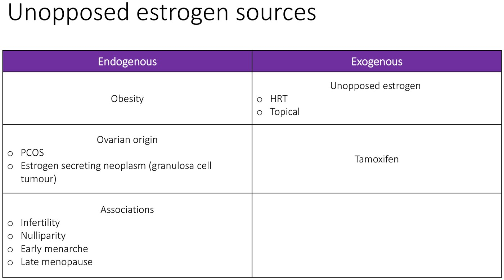
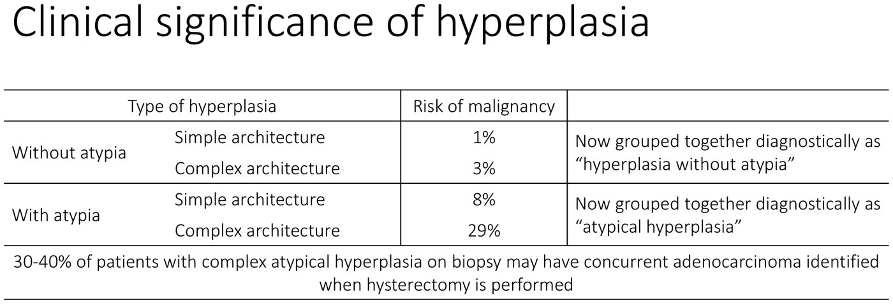
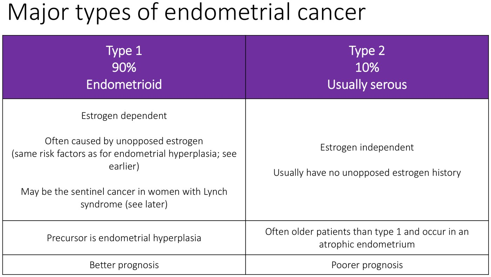
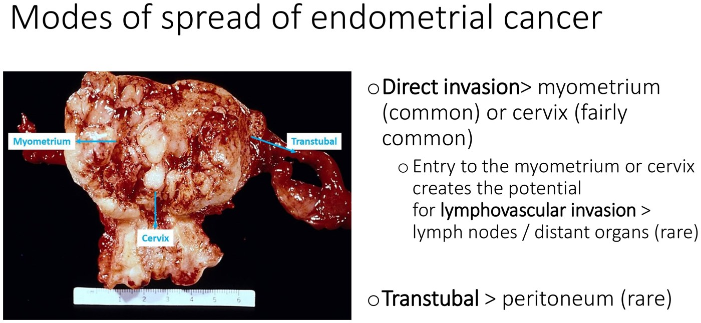

Post-menopausal Bleeding
- PMB = any bleeding after 12 months of amenorrhea. It is endometrial cancer until proven otherwise — that doesn't mean it usually is, it means the onus is on you to exclude it.
- Two investigations, always: transvaginal ultrasound and an endometrial biopsy — and don't skip the speculum exam, which can show you the cause in the office.
- <5 mm endometrium is the normal cutoff. But recurrent bleeding with a thin endometrium still needs a biopsy — not biopsying that group misses cancer 4% of the time.
- Most common cause = atrophy. Most serious = hyperplasia or carcinoma. Atrophy is a diagnosis of exclusion.
- Atypia is the whole ballgame in hyperplasia. Without atypia → 1–3% malignancy risk → medical management (progesterone). With atypia → up to 29%, and 30–40% already have cancer in the uterus → surgical management.
- Type 1 (endometrioid, 90%) is estrogen-dependent with hyperplasia as its precursor and a better prognosis. Type 2 (serous, 10%) is estrogen-independent, arises in an atrophic endometrium in older women, and does worse.
Learning Objectives
- Define post-menopausal bleeding.
- Outline a diagnostic pathway for a patient with PMB — vitals, history, physical exam, investigations, and when to refer to gynecology.
- Identify the causes of PMB, both the common ones and the life-threatening ones.
- Given four different pathology report scenarios in a patient with PMB, create a management plan.
- Define and outline potential treatments for vaginal atrophy.
- Define endometrial hyperplasia, state the biological significance of atypical vs non-atypical hyperplasia, and list common risk factors and treatment options.
- Define endometrial carcinoma, listing 2 major types and common risk factors.
- Contrast the clinical presentations of endometrial and cervical cancer.
- Outline staging, modes of spread and treatment for endometrial carcinoma.
- List reasons for increasing rates of endometrial cancer in Canada.
A combined clinicopathologic module — Dr. Joanna Walsh (pathology), Dr. Jenna Rawlins (gynecology) and Dr. Ji Hyun Jang (gynecologic oncology). The point of combining them is that the same pathology report means different things in different clinical contexts, which is exactly what the four-biopsy case thread below is built to show.
Definition & Incidence
PMB is any bleeding in a post-menopausal woman after the absence of menstrual flow for 12 months. That's it — a single episode of spotting counts.
| From a Scandinavian daily-diary study | Finding |
|---|---|
| 271 post-menopausal women kept a daily bleeding record for 1 year | 11% had PMB |
| Estimated incidence in the first 12 months after menopause | 409 / 1000 person-years |
| Estimated incidence > 3 years post-menopause | 42 / 1000 person-years |
Astrup K. Acta Obstet Gynecol Scand 2004;83(2):203.
Bleeding is ten times more common in the first year after the last period than it is three years out. The further from menopause a woman is when she bleeds, the more unusual it is — and the harder you should look.
The Diagnostic Pathway
Same skeleton as any bleeding patient: is she stable? → history → exam → investigations.
| Step | What you do |
|---|---|
| Vitals | For any patient with bleeding, first determine is the patient stable? |
| History | General history as for any patient, plus a full gynecologic and obstetric history |
| Physical | General, including abdominal and pelvic exam |
| Investigations | Clinical, radiologic and pathologic — the three columns below |
Clinical
| Test | What it gives you |
|---|---|
| Speculum exam | Always a good idea in the office. May reveal an endometrial mass poking through the cervical os, or another cause such as an ulcerated cervical mass |
| Endometrial biopsy | 99.6% sensitivity for endometrial cancer. Poor detection of polyps and focal lesions — it is done blind. Required for: endometrium > 5 mm · recurrent bleeding with endometrium < 5 mm · post-menopausal bleeding |
| Hysteroscopy | Direct visualization and biopsy. Useful for focal lesions found radiologically (e.g. polyps), and when office biopsy isn't possible. Carries standard surgical risks |
| Dilation & curettage | Useful when office sampling isn't available, hysteroscopy is contraindicated, or hysteroscopy isn't available. In 50% of cases, < 60% of the endometrium is sampled — see 5.4 |
Radiology
| Test | Numbers that matter |
|---|---|
| Transvaginal ultrasound (TVUS) | < 5 mm is the standard cutoff for a normal endometrium in a woman not on HRT. On HRT, < 5 mm is still considered normal — but > 50% will measure > 5 mm, and < 4% of those have endometrial pathology. Investigate if bleeding is persistent |
| Saline infusion sonohysterogram (SIS) | Indicated for a thickened endometrium > 5 mm. Sensitivity for focal lesions 93–100%, false positive rate 6–15%. Cannot discriminate benign from malignant endometrial lesions |
Pathology
Microscopic slides of tissue retrieved from the endometrial cavity — by blind biopsy, hysteroscopy or D&C — to make the diagnosis that guides management. Which is where the rest of this page goes.
The Pap test samples the cervix. PMB is usually coming from the endometrium. A normal Pap tells you nothing about the endometrial cavity, so yes, further investigation is still needed. (This is the module's own knowledge check.)
Referral — and the Incidental Thickened Endometrium
| Scenario | What to do |
|---|---|
| PMB plus risk factors for endometrial cancer | Refer to gynecology |
| Symptomatic or recurrent bleeding with focal pathology on biopsy (e.g. a polyp) | Refer |
| PMB with endometrium > 5 mm or a "vascular pedicle" | Refer |
| No bleeding, endometrial thickening found incidentally | Do not routinely sample. Decide case-by-case on endometrial cancer risk factors |
| Patient on tamoxifen, no bleeding | Do not perform routine ultrasound looking for thickening |
| Asymptomatic polyp on ultrasound | Triage for intervention by polyp size, age and other risk factors |
Tamoxifen is a partial agonist in the endometrium (see 4.4), so it thickens the endometrium in almost everyone who takes it. Screening ultrasounds in asymptomatic users therefore generate a flood of false positives and unnecessary biopsies. Bleeding, not thickness, is the trigger in this group.
Causes of PMB

The whole AUB differential, with the PMB-relevant ones circled. This is the same list you meet in 4.12 and 4.10 — age simply changes which branches are live. Note that atrophy and hyperplasia get added on the right; they are not a meaningful part of the differential in a 25-year-old.| The most common causes of PMB | Note |
|---|---|
| Atrophy (genitourinary syndrome of menopause, "GSM") | Most common. A diagnosis of exclusion |
| Exogenous hormones | HRT is a common cause — see below |
| Endometrial adenocarcinoma | Must be ruled out in every patient with PMB |
| Endometrial hyperplasia | The precursor lesion — atypia decides management |
| Endometrial polyp | Focal, so blind biopsy misses it |
Four Biopsies, One History

Four endometrial biopsies, all from the same clinical scenario: a 60-year-old woman with PMB. The amount of tissue on the slide depends on the procedure (blind, D&C, hysteroscopy) and on the state of the endometrium — and, as the reports below show, more tissue is not automatically worse news.| Report | Diagnosis | What you tell her |
|---|---|---|
| #1 | Benign endocervical epithelial fragments. Insufficient endometrial tissue for assessment | The biopsy needs to be repeated — by you or by a gynecologist. A non-diagnostic sample is not a negative result |
| #2 | Scant fragments of atrophic endometrium | Benign. You can offer treatment for atrophy, but she must come back if bleeding persists or recurs |
| #3 | Atypical hyperplasia | She may need a hysterectomy — refer to gynecology |
| #4 | Endometrioid adenocarcinoma | She needs a hysterectomy — refer to gynecology |
"Insufficient tissue" looks like a benign result and reads like one to a tired clinician. It is actually no result at all — the cavity was never assessed. In a woman with PMB that is an unfinished work-up, not a reassurance.
Atrophy
Endometrial, vaginal and vulvar atrophy is common after menopause, and the bleeding can come from exposed small blood vessels at any of those sites. It follows from hypoestrogenism, which causes microerosion, inflammation and spotting.
Atrophy is a pathologic diagnosis of exclusion — it has to fit with everything else you found.
| Clinical features of vulvar / vaginal atrophy | Treatment (usually by the family physician) |
|---|---|
| Loss of labial fullness | Nothing, if symptoms aren't troublesome |
| Pallor of urethral and vaginal epithelium | HRT |
| Narrow introitus | Local estrogen therapy — vaginal cream, vaginal pill or vaginal ring |
| Minimal vaginal moisture | |
| Loss of urethral meatal turgor (collagenous support is lost) |
The full treatment ladder for genitourinary syndrome of menopause — lifestyle, lubricants, moisturizers, pelvic physiotherapy, then local estrogen, DHEA or ospemifene — is in 5.3.
Endometrial Hyperplasia
An abnormal proliferation — an "overgrowth" — of the endometrial epithelium. The gland:stroma ratio increases and the glands look too crowded down the microscope.
Its risk factors are the same as those for type 1 endometrial adenocarcinoma, and nearly all of them reduce to prolonged unopposed estrogen:

Endogenous vs exogenous unopposed estrogen. Obesity is endogenous because peripheral adipose aromataseThe enzyme that converts androgens (androstenedione, testosterone) into estrogens. In adipose tissue it keeps producing estrone after the ovaries have stopped — unopposed by any progesterone. keeps converting androgens to estrone long after the ovaries stop. The bottom row — infertility, nulliparity, early menarche, late menopause — are associations, and they all describe more lifetime ovulatory cycles or more unopposed estrogen time.A note on HRT
| Fact | Number |
|---|---|
| Women experiencing PMB during the first six cycles of HRT | 63% |
| Women experiencing PMB in continued cycles | 37% |
| Endometrial hyperplasia in pure estrogen users after 12 months | 10% |
| … after 24 months | up to 50% |
PEPI trial, J Am Med Assoc 1996;275:370–375; Van Gorp T, Maturitas 2002;42(2):93–104.
A woman with a uterus cannot be on unopposed systemic estrogen. The frequency and intensity of bleeding depend on the regimen and the specific hormones; cyclic/sequential estrogen and progestin may carry some risk of hyperplasia or cancer with prolonged use.
Clinical significance — it all turns on atypia

Architecture barely moves the risk; nuclear atypia transforms it. 1% → 3% across architecture without atypia, but 8% → 29% once atypia is present — which is why the old four-way classification has collapsed into two diagnostic categories. The footnote is the real teaching point: 30–40% of complex atypical hyperplasia already harbours adenocarcinoma that the biopsy simply missed.| Hyperplasia without atypia | Atypical hyperplasia | |
|---|---|---|
| Risk | Low chance of progression to malignancy | High risk of concurrent or subsequent malignancy |
| Management | Medical. Progesterone — e.g. megestrol (Megace) or a levonorgestrel IUD | Surgical. Hysterectomy with bilateral salpingo-oophorectomy, abdominal, laparoscopic or vaginal |
| Follow-up | Repeat biopsy, usually at 3 months | Extensive evaluation to rule out concurrent cancer, then meticulous follow-up |
| Also | Eliminate the initial cause — remove exogenous estrogen, lifestyle change, weight loss | High-dose progesterone only if surgery is contraindicated |
Endometrial Carcinoma
Endometrial carcinoma is an epithelial tumour of the endometrium. Because endometrial epithelial cells form glands, it is an adenocarcinoma. Endometrioid describes what it looks like — the tumour cells still resemble normal endometrial glandular lining, just more crowded, more atypical, and invading stroma and usually myometrium. It is the commonest type, but not the only one: serous and clear cell carcinoma look quite different down the microscope.
- The #1 gynecologic tract malignancy.
- The 4th most common malignancy overall for women.
- Often curable — but it can kill.
Clinical presentation
| Feature | Detail |
|---|---|
| Vaginal bleeding | 90% of women with endometrial cancer present with it |
| Stage at presentation | 72% present with Stage 1 — tumour confined to the uterine corpus |
| Other symptoms | Cramping, pressure — not well delineated in the literature |
| Pelvic exam | May be completely normal, or may reveal an enlarged uterus |
ACOG. Obstet Gynecol 2005;106:413–7.
It announces itself early. The endometrium sits inside a cavity that drains out through the cervix, so a small tumour bleeds and the patient notices. Compare 5.2: the ovary sits free in the abdominal cavity with nothing to bleed into and no early warning symptom — which is exactly why high-grade serous carcinoma presents at an advanced stage while 72% of endometrial cancers present at Stage 1.
The two major types

Two diseases wearing one name. Type 1 is the estrogen story — same risk factors as hyperplasia, hyperplasia as its precursor, better outcome. Type 2 has nothing to do with estrogen, arises in an atrophic endometrium in older women, and does worse. A thin endometrium does not exclude type 2.An inherited syndrome caused by defects in mismatch repair genes, which let cells with DNA damage proceed unchecked through the cell cycle. Most commonly associated with colorectal carcinoma — but women with Lynch syndrome carry a 40–70% lifetime risk of endometrioid endometrial adenocarcinoma, and it is often the sentinel cancer in these women.
In Ontario, all endometrial carcinomas are tested for mismatch repair deficiency (further molecular testing may follow). If a deficiency is found in the tumour, genetic counselling ± further testing is recommended.
Modes of spread

An opened uterus with the cavity filled by polypoid tumour. Direct invasion into myometrium or cervix is the common route — and it matters because entering myometrium or cervix is what creates access to lymphovascular channels. Nodal, distant and transtubal peritoneal spread are all rare by comparison.Staging and treatment
| Detail | |
|---|---|
| Staging | Done by the pathologist, after resection, using TNM (tumour, nodes, metastasis). Usually translated into a FIGO stage for clinical discussion |
| What stage decides | Further management — specifically whether adjuvant treatment is needed |
| Surgery | Hysterectomy with bilateral salpingo-oophorectomy — abdominal, laparoscopic or vaginal (see 5.5) |
| If higher grade or stage | Lymphadenectomy, further staging, and possibly radiation and/or chemotherapy |
Cervical vs endometrial cancer — different risk profiles entirely
| Cervical cancer | Endometrial cancer |
|---|---|
| HPV infection | Older age |
| Cigarette smoking | Unopposed estrogen (estrogen-only HRT post-menopause) |
| Sexual activity — more partners, younger age at first activity | Obesity |
| Immunosuppression (HIV, immunosuppressants) | Reproductive factors — early menarche, late menopause, PCOS, infertility, nulliparity, menstrual irregularity |
| Long-term combined oral contraceptive use | Comorbidities — diabetes, hypertension, gallbladder disease |
| Lack of regular cervical screening | Family history — Lynch syndrome, possibly pathogenic BRCA variants |
| Residents of low-income countries | Tamoxifen use |
| Socioeconomic — North American / northern European residence, higher education or income, White race |
Cervical cancer's risk factors are about exposure and access — a virus, smoking, and not being screened. Endometrial cancer's are about estrogen and metabolism — fat, diabetes, nulliparity, tamoxifen. The COC column entry is the clean illustration: long-term combined oral contraceptive use is listed as a risk for cervical cancer and is protective against endometrial cancer, because it delivers progestin that opposes estrogen at the endometrium. Cervical screening catches its cancer early; there is no screening test for endometrial cancer — bleeding is the screening test.
Why rates are rising
Endometrial cancer incidence is rising in the majority of countries. In Canada the average annual percent change is roughly 1–2%; in Ontario, incidence rose 3.6% per year in women aged 30–49 between 1997 and 2016.
Proposed reasons — none of them proven, all still hypotheses:
- Rising incidence of obesity
- Rising incidence of diabetes
- Higher rates of nulliparity and fewer pregnancies
- Earlier age of menarche
- Use of hormone replacement therapy
Dr. Jang's point in the recording: given the obesity epidemic, the obesity hypothesis is at least plausible — but plausible is all it is.
Key Points
| Structural causes must be excluded in any woman with PMB. Most common = atrophy. Most serious = carcinoma or hyperplasia |
| Endometrial carcinoma must be excluded in a woman with PMB |
| Appropriate investigations are TVUS and endometrial biopsy — and don't forget the speculum exam |
| Risk factors for hyperplasia and type 1 (endometrioid) adenocarcinoma are the same: unopposed estrogen |
| Hyperplasia matters because it is a precursor to carcinoma. Without atypia → medical. With atypia → surgical |
Built from the Elentra module "Post-menopausal woman presenting with bleeding" (Dr. Joanna Walsh, Dr. Jenna Rawlins, Dr. Ji Hyun Jang), its accompanying notes PDF, and the module's two recorded clips — Dr. Walsh on endometrioid morphology and Dr. Jang on rising endometrial cancer rates. All slide figures are from the module's own notes document, which cites Astrup (Acta Obstet Gynecol Scand 2004), the PEPI trial (JAMA 1996), Van Gorp (Maturitas 2002), ACOG (Obstet Gynecol 2005) and Cancer Care Ontario. The work-up flowchart is drawn for these notes from the module's prose. Auto-captions on the recordings garbled several terms ("individual cancer" for endometrial cancer, "knowledge parity" for nulliparity, "and Dimitri" for endometrioid); the written module was followed wherever the two disagreed. The pathology of these same lesions from the AUB angle is in 4.12; the clinical approach to AUB at all ages is 4.10.